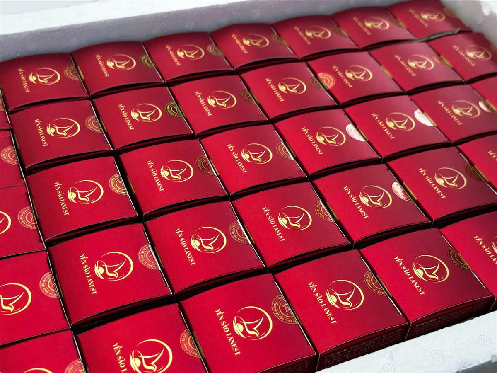

Yến sào không còn là món chỉ nhà khá giả mới mua để dành biếu. Người mua bây giờ hỏi kỹ hơn, chọn tiện hơn và đòi bằng chứng nhiều hơn. Bài này điểm lại xu hướng thị trường yến sào 2026 từ góc nhìn của một doanh nghiệp làm yến ở Khánh Hòa: những gì Lanest đã ghi nhận trong các bài tổng hợp trước đây, và những gì đội Lanest thấy trực tiếp khi bán hàng.
Yến chưng đông trùng hạ thảo dòng 7g yến tươi, loại hũ mở nắp là dùng được
1. Thị trường vẫn lớn dần, nhưng người mua thận trọng hơn
Trong bài tổng hợp đăng tháng 10/2025, Lanest ghi nhận tiêu thụ yến sào trong nước tăng trung bình khoảng 15–20% mỗi năm, nhất là ở nhóm quan tâm dinh dưỡng, làm đẹp và chăm sóc sức khỏe chủ động. Yến sào Việt Nam còn được xuất khẩu sang Trung Quốc, Hàn Quốc, Nhật Bản và một số thị trường châu Âu.
Nhóm khách dùng yến nhiều được nhắc tới là người 25–45 tuổi, người cao tuổi và gia đình có trẻ nhỏ. Cùng với tăng trưởng là nỗi lo về chất lượng, truy xuất nguồn gốc và hàng giả, điều mà bất kỳ ai từng mua yến cũng ít nhiều gặp.
2. Yến chưng sẵn thay dần cho tổ yến tự chưng
Xu hướng rõ nhất: người tiêu dùng chuộng sản phẩm chế biến sẵn, bao bì đẹp, kiểm định rõ ràng, thay vì chỉ mua tổ yến thô về tự làm. Lý do dễ hiểu: tự chưng phải ngâm, nhặt, canh lửa, trong khi một hũ yến chưng sẵn chỉ cần mở nắp.
Ở Lanest, yến hũ chưng sẵn hiện có hai dòng: 7g yến tươi với 14 vị, và nguyên chất 100% với 3 vị. Tổ yến tinh chế vẫn có khách riêng, là những người thích tự chưng và tự phối nguyên liệu. Muốn cân nhắc giữa hai cách, xem bài yến hũ chưng sẵn hay tự chưng.
3. Người mua đòi bằng chứng: nguồn gốc, kiểm nghiệm, tem
Người mua thông minh hơn trước. Họ hỏi yến từ đâu, ai làm, có giấy kiểm nghiệm không, có tem chống giả và mã truy xuất không. Doanh nghiệp yến muốn được tin phải có chứng nhận an toàn thực phẩm, công bố thành phần rõ ràng và sẵn sàng cho khách xem giấy tờ.
Với Lanest, đây không chỉ là xu hướng mà là lý do để tồn tại. Người sáng lập Lanest nói về những năm gần đây khi nhiều đơn vị cùng địa bàn ngừng hoạt động:
"Nhiều bên đóng cửa nhưng bên chị vẫn duy trì được vì hàng tháng đều tự gửi mẫu đi kiểm nghiệm thật."
Anh chị có thể xem cách đọc giấy tờ ở bài chứng nhận ISO 22000 và tem truy xuất nguồn gốc.
4. Thị trường thanh lọc: ai làm ẩu thì rời cuộc chơi
Một điều ít người ngoài ngành thấy: thị trường yến đang tự lọc. Theo người sáng lập Lanest, những nhãn yến từng có mặt ở khu vực này ngừng lại vì ba lý do:
"người ta làm sản phẩm yến cho không đạt nên người ta ngưng hoặc người ta không xuất hóa đơn đầy đủ, sợ kiểm tra ngược lại nên ngưng, hoặc cắt máu quá sát không đủ khả năng duy trì."
Với người mua và người bán lại, bài học là: chọn nơi có hóa đơn đầy đủ, có kiểm nghiệm và bán đúng giá niêm yết, thay vì chạy theo chỗ rẻ nhất. Nguồn hàng đóng cửa thì người mua lại là người chịu thiệt đầu tiên.

Hộp yến nhỏ màu đỏ in logo Lanest, xếp sẵn trong thùng trước khi giao
5. Quà sức khỏe và mùa cao điểm cuối năm
Yến sào gắn chặt với chuyện biếu tặng. Các thương hiệu, trong đó có Lanest, đầu tư nhiều hơn cho bao bì quà tặng. Theo kinh nghiệm bán hàng của Lanest, từ tháng 8 đến cuối năm năm nào cũng là thời điểm bán hàng chính, khi gia đình và doanh nghiệp bắt đầu chọn quà Trung Thu, quà Tết. Lanest cũng thường xuyên đổi mới mẫu hộp, nên mẫu mỗi mùa có thể khác nhau. Gợi ý chọn quà có ở bài quà biếu sức khỏe yến sào.
6. Quan tâm hơn tới đường và thành phần trên nhãn
Khách hỏi về lượng đường nhiều hơn trước, nhất là khi mua cho người lớn tuổi hoặc người đang cần kiểm soát đường huyết. Lanest có hai vị yến hũ dùng đường isomalt thay đường phèn, và luôn khuyên người đang điều trị bệnh hỏi bác sĩ trước khi dùng thường xuyên.
Song song, khách đọc nhãn kỹ hơn: hũ có bao nhiêu yến, là yến tươi hay tổ yến khô, có chất ổn định, hương liệu hay không. Lanest ghi đầy đủ các thông tin này trên nhãn và trong hồ sơ công bố, để khách so sánh được.
Câu hỏi thường gặp
Thị trường yến sào Việt Nam tăng trưởng bao nhiêu mỗi năm?
Bài tổng hợp Lanest đăng năm 2025 ghi nhận mức tăng tiêu thụ trong nước trung bình khoảng 15–20%/năm. Đây là con số tham khảo, không phải số liệu thống kê chính thức của Lanest.
Mua yến lúc nào để kịp quà Tết?
Từ tháng 8 đến cuối năm là mùa cao điểm, đơn dồn nhiều. Anh chị cần quà số lượng lớn nên đặt sớm và báo trước nhu cầu hóa đơn VAT.
Chọn yến thế nào cho đúng xu hướng "minh bạch"?
Xem nhãn thành phần, số tự công bố, hạn dùng; hỏi giấy kiểm nghiệm và chứng nhận an toàn thực phẩm; mua nơi có hóa đơn đầy đủ.